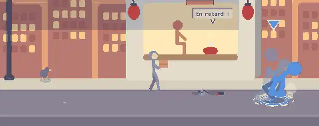
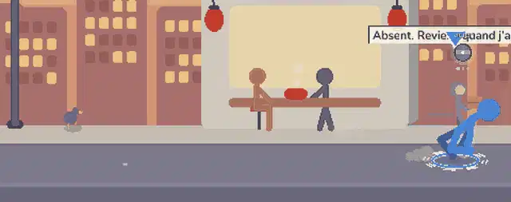
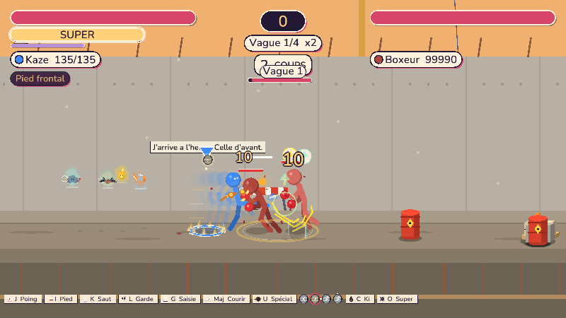
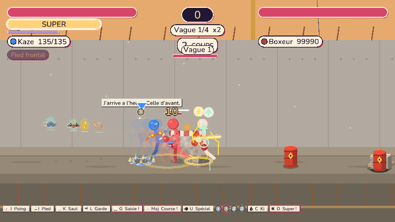
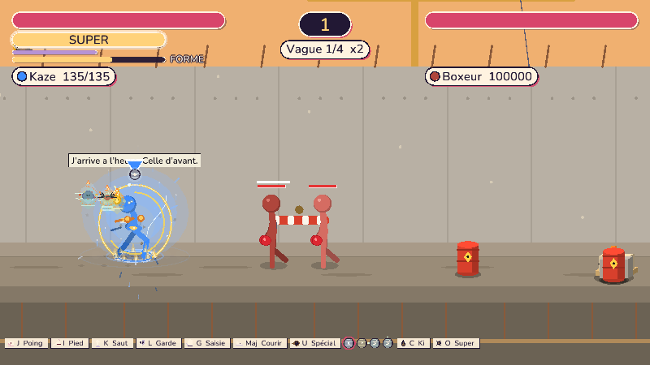
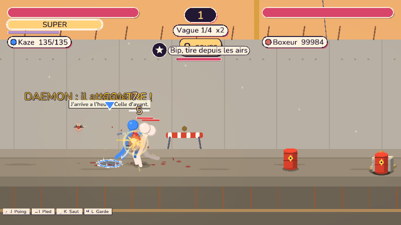
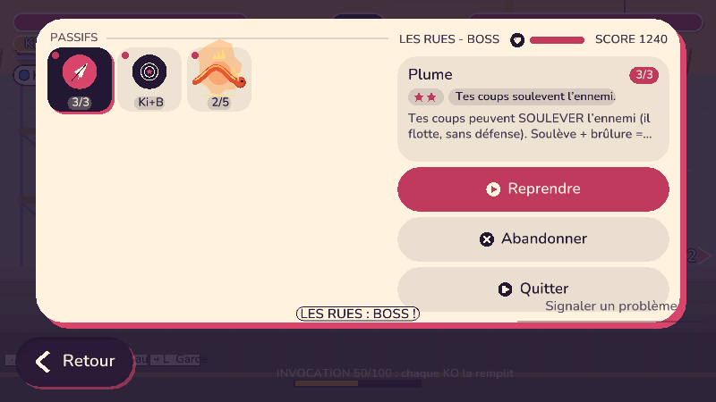

Retour : « seulement poing, pied, saut, garde au départ ; une icone au-dessus du personnage pour savoir quel pouvoir part ; le stick droit pour choisir ; d'abord le Ki, puis une seconde barre pour la transformation (un objet) ; une seule roulade, plus rapide que la course ; dire ce que fait un daemon libere ». Journal : tools/playtest/contrôles_spéciaux.md. Images : vrai moteur.

Trois familles tirees au hasard (roulade, salto, esquive de 20 images), 112 px : plus lent que courir.

Une roulade avant, une arrière, toujours la même. Vitesse effective 1,3 x la course du héros.
| Mesure (test) | Résultat |
|---|---|
| Distance de roulade contre course sur le même nombre d'images, 14 héros, avant et arrière | vitesse de roulade = vitesse de course (à l'image près) |
| Invulnerabilite | 70 % de l'animation, la reception reste vulnerable |
| Graines differentes du monde | même animation et même duree |

Glyphe du pouvoir qui part, anneau de recharge, un point par pouvoir (le choisi est allume).

Haut, bas ou avant tenu : l'icone montre le pouvoir de cette direction avant le lancement.
Manette : stick droit = choisir (haut, bas, avant ; direction sans pouvoir = retour au neutre), Spécial = lancer. Tactile : maintenir Pouvoir, glisser, relâcher. Clavier : Tab ou direction + Spécial. Même chose hors roguelite sur les cinq touches Spécial du héros.

La barre FORME n'avance que Ki plein, et seulement si le héros a l'objet de transformation.

Icone, nom et effet en six mots.

Le daemon et son effet font partie des objets et bonus obtenus.